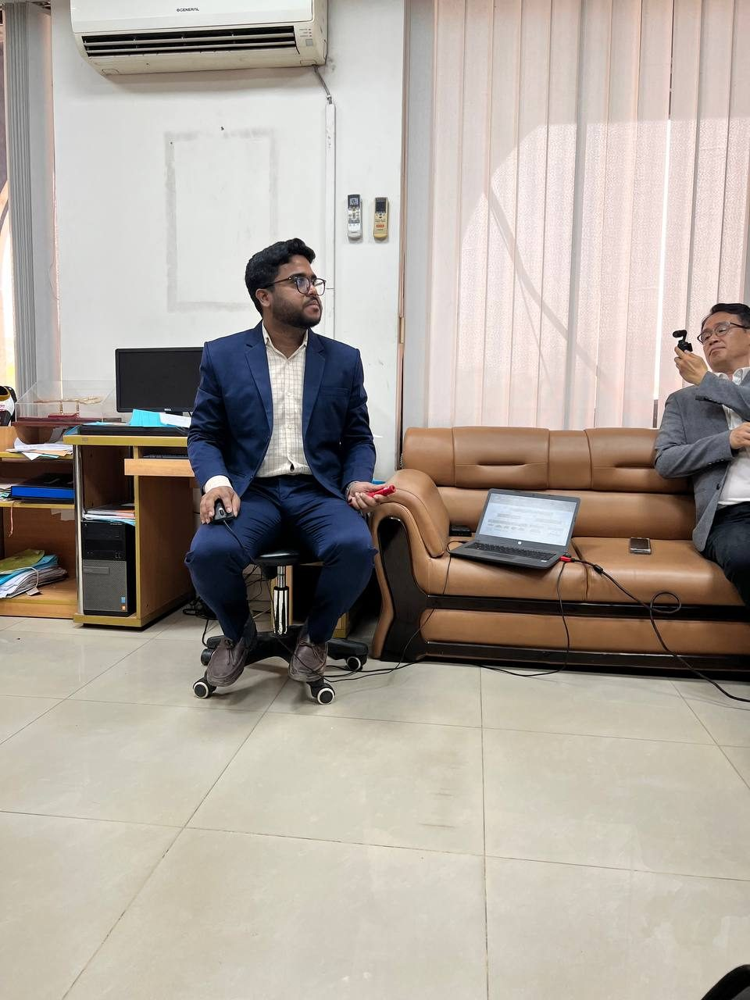
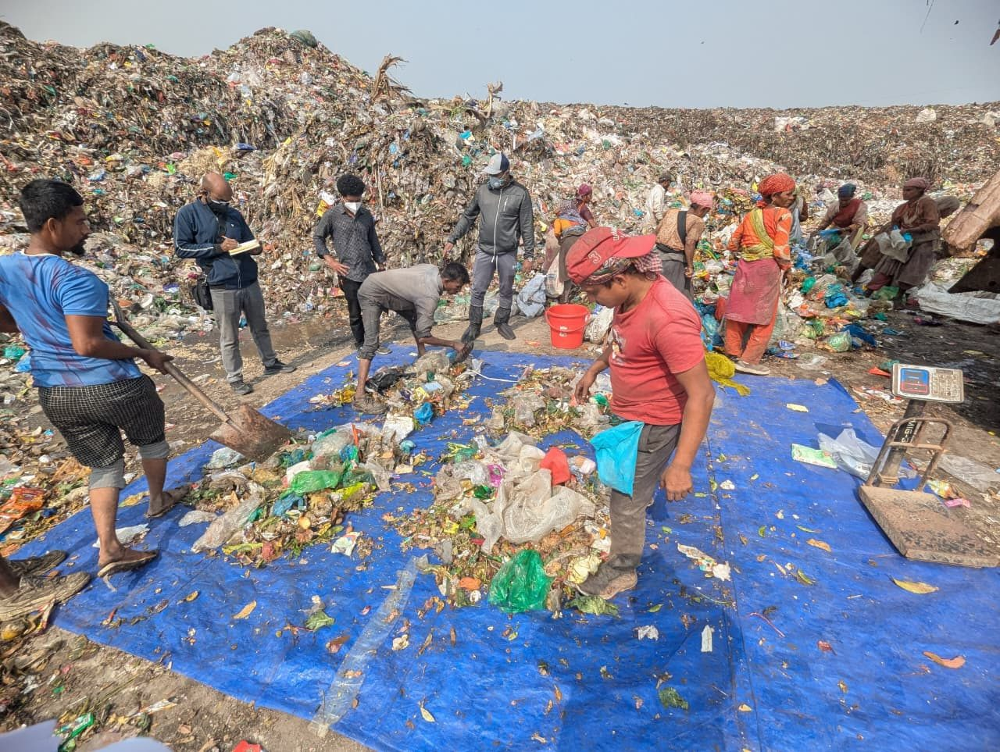

Observe closely.
GIS, field surveys, primary data and site-level observation.
PROJECTS. PEOPLE. PURPOSE.
From a village survey to the boardroom. A living record of the places, people and projects that shaped my practice.
EXPLORE MY JOURNEY

SCROLL TO DISCOVER ↓
Each chapter carries its own evidence: site visits, field photographs, training, stakeholder meetings and the work behind them. Select a chapter to explore its visual story, one moment at a time.
TRACK 01 / EXPERIENCE
Building ideas in the field and taking them into practice — across organizations and collaborations.
GIS, field surveys, primary data and site-level observation.
Citizen-led assessment, consultations, training and collaboration.
Project coordination, documentation, presentations and implementation planning.
THE NEXT CHAPTER
Photographs document participation and fieldwork. Proposals, discussions or site visits are not presented as completed projects or confirmed financing.